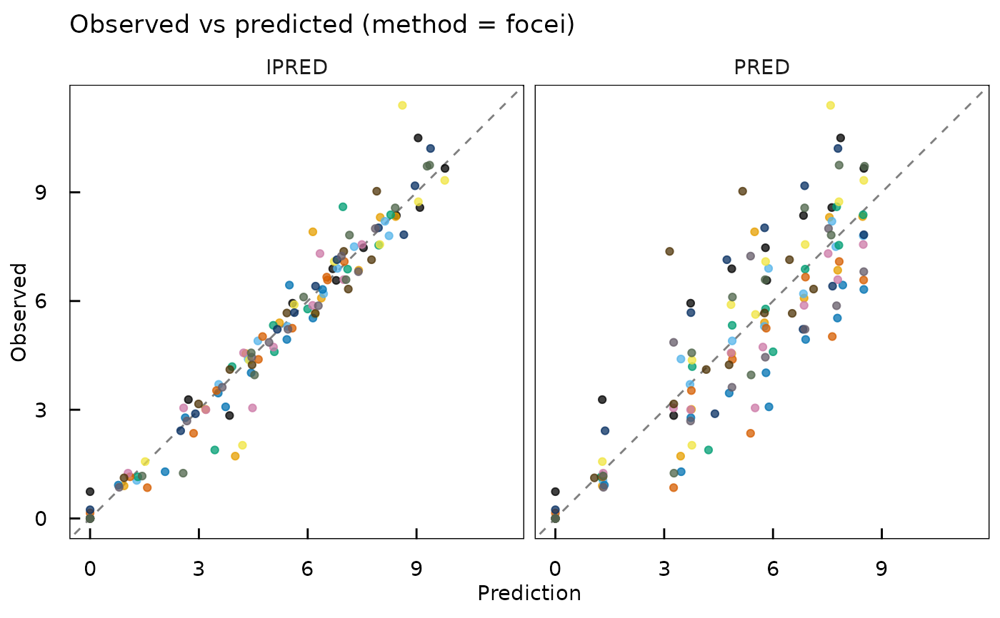
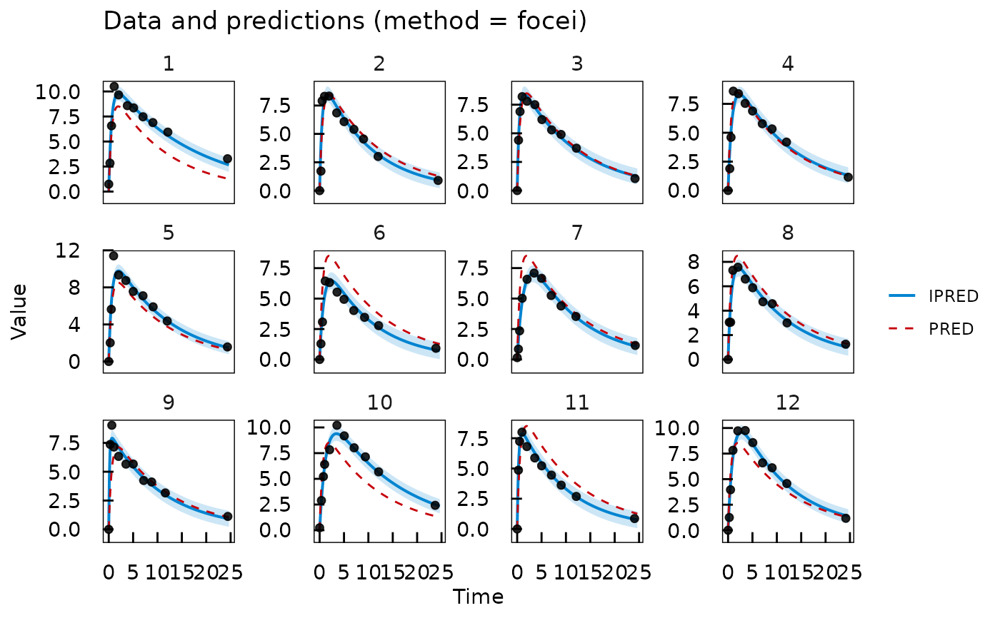

S3 plot method for an em fit, see em(). Two-panel scatter: DV vs IPRED
on the left, DV vs PRED on the right, identity line shown dashed. With a
multi-observable fit the observable becomes a faceting row
(name ~ panel); otherwise one row with facet_wrap(~ panel).
Usage
# S3 method for class 'em'
plot(x, ...)Arguments
- x
An
emfit, seeem().- ...
Ignored.
Examples
# \donttest{
## Theophylline, 12 subjects: one-compartment model with first-order absorption in closed
## form, log parameters with a normal random intercept per subject, additive error
th <- datasets::Theoph
th$Subject <- as.character(th$Subject)
subjects <- unique(th$Subject)
data <- as.datalist(data.frame(name = "y", time = th$Time, value = th$conc, sigma = NA_real_,
condition = th$Subject))
## second derivatives forward over reverse, the default of em()
dm <- c("forward", "reverse", "forward-reverse")
x <- Xt()
g <- Y(c(y = "amt * Ka / (V * Ka - Cl) * (exp(-Cl / V * time) - exp(-Ka * time))"),
states = "time", modelname = "theoph_obs", compile = FALSE, derivMode = dm,
outdir = tempdir())
#> Overwriting: /tmp/RtmpRZjXf9/theoph_obs.cpp
err <- Y(c(y = "sigma_add"), g, attachInput = FALSE, modelname = "theoph_err", compile = FALSE,
derivMode = dm, outdir = tempdir())
#> Overwriting: /tmp/RtmpRZjXf9/theoph_err.cpp
## one condition per subject with the subject dose; the effect formula replaces each log parameter
## by an intercept plus a random effect per subject
doses <- tapply(th$Dose * th$Wt, th$Subject, `[`, 1)[subjects]
trafo <- branch(define(NULL, "x <- x", x = c("Ka", "V", "Cl", "amt", "sigma_add")),
table = data.frame(ID = subjects, dose = doses, row.names = subjects))
trafo <- insert(trafo, "amt <- dose", dose = dose)
trafo <- insert(trafo, "x <- exp(x)", x = c("Ka", "V", "Cl", "sigma_add"))
p <- P(insert(trafo, Ka + V + Cl ~ 1 + (1 | ID)), method = "explicit", compile = FALSE,
modelname = "theoph_p", derivMode = dm, outdir = tempdir())
compile(g, err, p, output = tempfile("theoph"))
#> using C++ compiler: g++ [-O2 -DNDEBUG -w -fPIC]
#> reusing 14 unchanged object(s)
obj <- normL2(data, g * x * p, errmodel = err)
fit <- em(obj, randomEffects(p), init = c(Ka = 0, V = 3, Cl = 0.7, sigma_add = log(0.5)))
## data against the population (PRED) and individual (IPRED) prediction, with residuals
pr <- predict(fit)
head(pr)
#> condition group time name observed sigma sigmaPRED IPRED PRED
#> 1 1 1 0.00 y 0.74 0.694404 0.694404 0.000000 0.000000
#> 2 1 1 0.25 y 2.84 0.694404 0.694404 3.845625 3.262278
#> 3 1 1 0.57 y 6.57 0.694404 0.694404 6.784953 5.829128
#> 4 1 1 1.12 y 10.50 0.694404 0.694404 9.043486 7.864023
#> 5 1 1 2.02 y 9.66 0.694404 0.694404 9.784612 8.504583
#> 6 1 1 3.82 y 8.58 0.694404 0.694404 9.093280 7.620456
#> source IRES PRES IWRES PWRES
#> 1 obs 0.7400000 0.7400000 1.0656621 1.0656621
#> 2 obs -1.0056252 -0.4222781 -1.4481847 -0.6081158
#> 3 obs -0.2149534 0.7408719 -0.3095509 1.0669177
#> 4 obs 1.4565144 2.6359772 2.0975030 3.7960283
#> 5 obs -0.1246117 1.1554172 -0.1794513 1.6638977
#> 6 obs -0.5132796 0.9595436 -0.7391657 1.3818233
## the population prediction at additional times, here of the first subject
grid <- seq(0, 24, by = 4)
pop <- predict(fit, times = grid, type = "population")
pop[pop$condition == "1" & pop$time %in% grid, ]
#> condition group time name observed sigmaPRED PRED source PRES PWRES
#> 1 1 1 0 y 0.74 0.694404 0.000000 obs 0.74 1.065662
#> 42 1 1 4 y NA 0.694404 7.508436 grid NA NA
#> 55 1 1 8 y NA 0.694404 5.325248 grid NA NA
#> 66 1 1 12 y NA 0.694404 3.767676 grid NA NA
#> 70 1 1 16 y NA 0.694404 2.665660 grid NA NA
#> 71 1 1 20 y NA 0.694404 1.885975 grid NA NA
#> 74 1 1 24 y NA 0.694404 1.334342 grid NA NA
## observed against predicted, and data with the predicted curves per subject
plot(fit)

plotCombined(fit)

# }